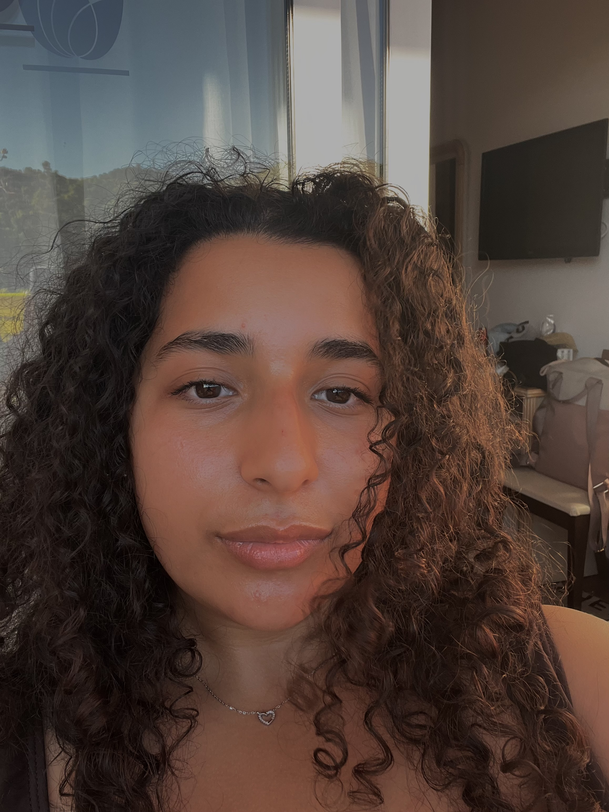

Curriculum Vitae
Naam: Insaf Koudadi
Leeftijd: 21 jaar
Profiel: Ik heb een, creatieve geest met een grote liefde voor fotografie, natuur en het bijleren van digitale vaardigheden. Ik ben altijd bezig met nieuwe manieren om met iets creatiefs bezig te zijn. Via beeld, video, koken, ….
Mijn doel is om mijn passie voor creatie om te zetten in werk waar ik niet alleen mezelf, maar ook anderen mee kan inspireren.
Studie/kennis:
- Semester Coderen: Kennis van HTML, basis webdesign en de structuur van websites.
- Media Management: Ervaring met Adobe-programma's zoals Photoshop en InDesign. Dit heeft me geholpen bij het bewerken van beelden, ontwerpen van grafische projecten, en het creëren van visuele content.
Vaardigheden:
- Fotografie – Geavanceerde fotografievaardigheden, vooral gericht op natuurbeelden.
- Video-bewerking – Ervaring met het bewerken van video's, voornamelijk natuurvideo's.
- HTML – Basiskennis van coderen en webdesign
